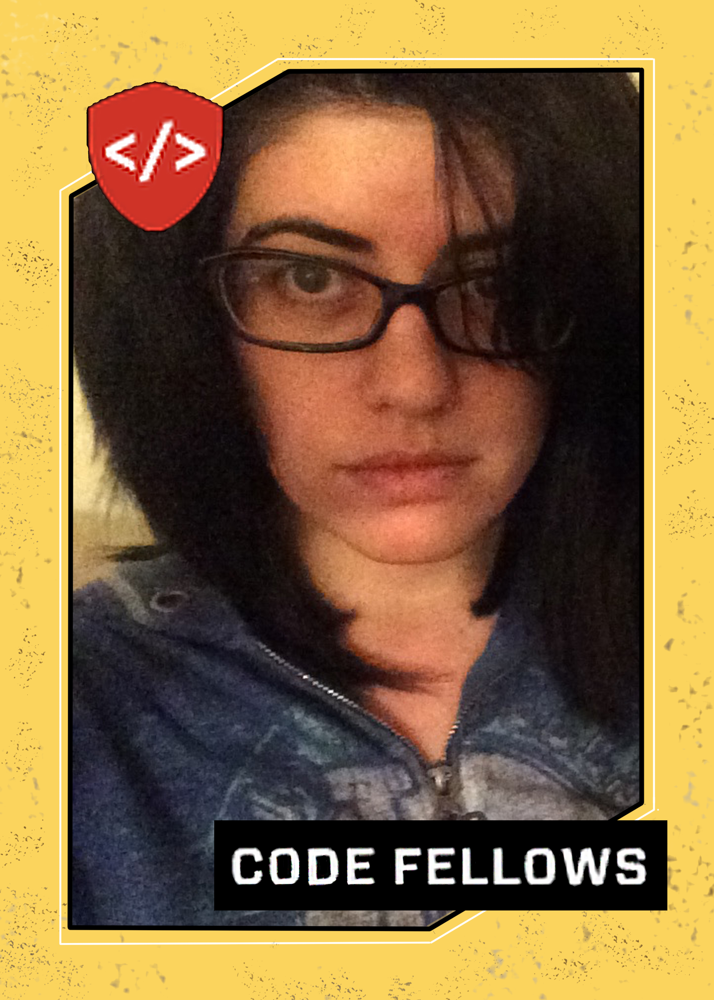

Nadia Bahrami
Nadia doesn't know much about baseball, but she has watched 'A League of Their Own' and thought it was awesome. Like this project.

Shelly Yusuf
Shelly is really going to miss Vin Scully and Nancy Bea. Let’s go, Dodgers.

Paul Sheridan
Paul has never played baseball in his life, although he loves crunching data and ballpark nachos. He doesn’t know who Vin Scully is and wonders if it’s an X-files reference.

Kate Zurlo-Cuva
Kate grew up with the sounds of Bob Uecker Brewers radio in the background and her first crush was Paul Molitor.